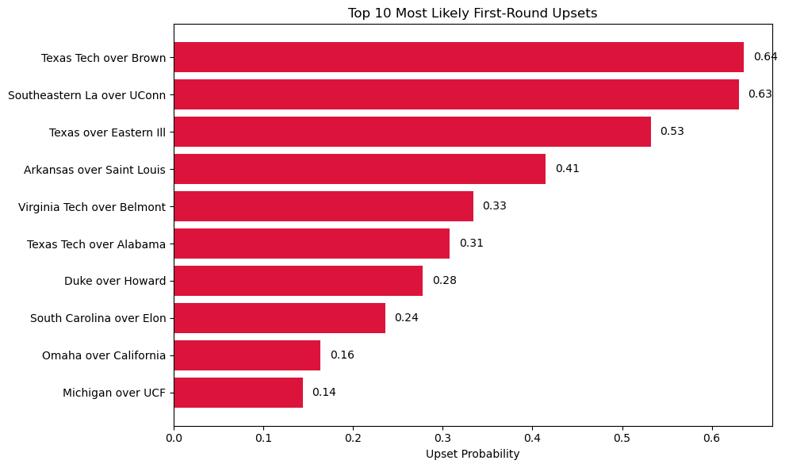
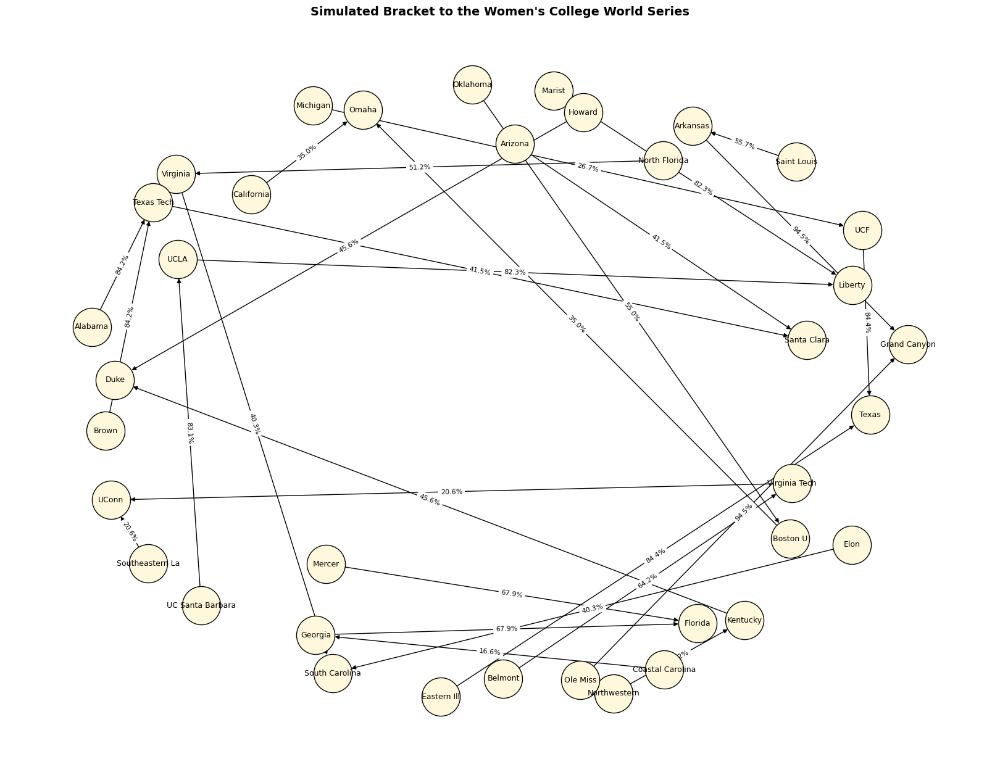

Conclusion: ✅ Statistically significant difference — teams in the tournament hit better on average than the general D1 population.
The histogram confirms this visually — tournament teams cluster to the right of the general population, showing stronger offensive stats.
Code
# Clean team names in the pitching team dataset for matchingpitching_team["Team_clean"] = pitching_team["Team"].str.replace(r"[^A-Za-z\s]", "", regex=True).str.strip()# Match bracket teams to pitching_team datasetbracket_pitching_stats = pitching_team[pitching_team["Team_clean"].isin([team.replace(".", "").replace("St", "State").replace("Fla", "Florida").strip() for team in bracket_teams])]# Calculate mean and standard deviation for tournament teams' ERAtourney_mean_era = bracket_pitching_stats["ERA"].mean()tourney_std_era = bracket_pitching_stats["ERA"].std()n_tourney_pitch = bracket_pitching_stats.shape[0]# 95% Confidence Interval for tournament team ERAt_critical_pitch = stats.t.ppf(0.975, df=n_tourney_pitch-1)margin_error_pitch = t_critical_pitch * (tourney_std_era / np.sqrt(n_tourney_pitch))ci_lower_era = tourney_mean_era - margin_error_pitchci_upper_era = tourney_mean_era + margin_error_pitch# Compare to overall population mean ERAoverall_mean_era = pitching_team["ERA"].mean()t_stat_era, p_val_era = stats.ttest_1samp(bracket_pitching_stats["ERA"], overall_mean_era)# Create a visual histogram of team ERA distribution with the tournament averageplt.figure(figsize=(12, 6))sns.histplot(pitching_team["ERA"], bins=15, color="lightgray", label="All D1 Teams")sns.histplot(bracket_pitching_stats["ERA"], bins=10, color="salmon", label="Tournament Teams")plt.axvline(tourney_mean_era, color='darkred', linestyle='--', label=f'Tourney Mean ERA = {tourney_mean_era:.2f}')plt.axvline(overall_mean_era, color='black', linestyle='--', label=f'Overall Mean ERA = {overall_mean_era:.2f}')plt.title("Distribution of Team Earned Run Averages (ERA)")plt.xlabel("ERA")plt.ylabel("Number of Teams")plt.legend()plt.tight_layout()plt.show()# Return key stats{"Tournament Mean ERA": round(tourney_mean_era, 2),"95% Confidence Interval": (round(ci_lower_era, 2), round(ci_upper_era, 2)),"Population Mean ERA": round(overall_mean_era, 2),"t-statistic": round(t_stat_era, 3),"p-value": round(p_val_era, 4),"Conclusion": "Significant difference (p < 0.05)"if p_val_era <0.05else"No significant difference"}
Conclusion: ✅ Statistically significant difference — tournament teams have much stronger pitching (lower ERA) than the general D1 population.
The histogram clearly shows tournament teams are concentrated at lower ERAs, confirming superior pitching.
Code
# Categorize bracket teams into BA and ERA tiersdef tiered_column(series, quantiles=(0.33, 0.66), labels=("Low", "Mid", "High")):return pd.qcut(series, q=[0, quantiles[0], quantiles[1], 1], labels=labels)# Merge hitting and pitching team data on cleaned team namesmerged = pd.merge( hitting_team[["Team_clean", "BA"]], pitching_team[["Team_clean", "ERA"]], on="Team_clean", how="inner")# Add tournament statusmerged["In_Tournament"] = merged["Team_clean"].isin( [team.replace(".", "").replace("St", "State").replace("Fla", "Florida").strip() for team in bracket_teams])# Assign BA and ERA tiersmerged["BA_Tier"] = tiered_column(merged["BA"])merged["ERA_Tier"] = tiered_column(merged["ERA"], labels=["High", "Mid", "Low"]) # Lower ERA is better# Create contingency tablesba_table = pd.crosstab(merged["BA_Tier"], merged["In_Tournament"])era_table = pd.crosstab(merged["ERA_Tier"], merged["In_Tournament"])# Chi-square testschi2_ba, p_ba, _, _ = stats.chi2_contingency(ba_table)chi2_era, p_era, _, _ = stats.chi2_contingency(era_table)# Return results{"BA Chi-square p-value": round(p_ba, 4),"BA Conclusion": "Performance tier is related to tournament inclusion"if p_ba <0.05else"No significant relationship","ERA Chi-square p-value": round(p_era, 4),"ERA Conclusion": "Performance tier is related to tournament inclusion"if p_era <0.05else"No significant relationship"}
{'BA Chi-square p-value': 0.0,
'BA Conclusion': 'Performance tier is related to tournament inclusion',
'ERA Chi-square p-value': 0.0,
'ERA Conclusion': 'Performance tier is related to tournament inclusion'}
✅ Chi-Square Test Results
Batting Average (BA) Tiers vs. Tournament Inclusion
p-value: < 0.0001
✅ Conclusion: There is a significant relationship — higher BA tiers are more likely to make the tournament.
ERA Tiers vs. Tournament Inclusion
p-value: < 0.0001
✅ Conclusion: There is a significant relationship — teams with lower ERA (better pitching) are more likely to qualify.
Now let’s build a logistic regression model using both BA and ERA to predict tournament inclusion.
Linear vs Logistic Regression
Linear Regression
Logistic Regression
Used to predict the continuous dependent variable using a given set of independent variables.
Used to predict the categorical dependent variable using a given set of independent variables.
The outputs produced must be a continuous value, such as price and age.
The outputs produced must be Categorical values such as 0 or 1, Yes or No.
The relationship between the dependent variable and independent variable must be linear.
The relationship DOES NOT need to be linear between the dependent and independent variables.
Used for solving Regression problems.
Used for solving Classification problems.
We are finding and using the line of best fit to help us easily predict outputs.
We are using the S-curve (Sigmoid) to help us classify predicted outputs.
Least square estimation method is used for the estimation of accuracy.
Maximum likelihood estimation method is used for the estimation of accuracy.
There is a possibility of collinearity between the independent variables.
There should not be any collinearity between the independent variable.
Code
import statsmodels.api as sm# Prepare logistic regression datamodel_data = merged.dropna(subset=["BA", "ERA"])X = model_data[["BA", "ERA"]]X = sm.add_constant(X)y = model_data["In_Tournament"].astype(int)# Fit logistic regression modellogit_model = sm.Logit(y, X).fit()# Display model summarylogit_summary = logit_model.summary2().as_text()print(logit_summary)
If this number is positive and large, the underdog is predicted to be stronger than the favorite.
Here is the chart of the Top 10 Most Likely First-Round Upsets, showing which underdogs are most likely to beat their higher-seeded opponents based on team batting and pitching stats.
Next, let’s simulate a full bracket based on win probabilities — round by round — and output which teams advance to the Women’s College World Series.
Code
import matplotlib.pyplot as plt# Take top 10 potential upsets for the charttop_upsets = upsets_sorted[:10]labels = [f"{u['Underdog']} over {u['Favorite']}"for u in top_upsets]probabilities = [u['Upset Probability'] for u in top_upsets]# Plotplt.figure(figsize=(10, 6))bars = plt.barh(labels, probabilities, color="crimson")plt.xlabel("Upset Probability")plt.title("Top 10 Most Likely First-Round Upsets")plt.gca().invert_yaxis() # highest at topfor bar in bars: width = bar.get_width() plt.text(width +0.01, bar.get_y() + bar.get_height()/2, f"{width:.2f}", va='center')plt.tight_layout()plt.show()

Code
# Filter valid matchups onlyvalid_matchups = []for fav, under in matchups:if fav in team_lookup and under in team_lookup: valid_matchups.append((fav, under))# Re-run round 1 with valid matchupsround1_results = []for fav, under in valid_matchups: fav_stats = team_lookup[fav] under_stats = team_lookup[under] df_fav = pd.DataFrame([[1, fav_stats[1], fav_stats[2]]], columns=["const", "BA", "ERA"]) df_under = pd.DataFrame([[1, under_stats[1], under_stats[2]]], columns=["const", "BA", "ERA"]) fav_prob = logit_model.predict(df_fav)[0] under_prob = logit_model.predict(df_under)[0] winner = fav_stats[0] if fav_prob > under_prob else under_stats[0] round1_results.append(winner)# Ensure even number of teams for super regionalseven_round1 = round1_results[:len(round1_results) -len(round1_results) %2]# Group into Super Regionalssuper_regionals = [(even_round1[i], even_round1[i+1]) for i inrange(0, len(even_round1), 2)]super_winners = []# Simulate Super Regionalsfor team1, team2 in super_regionals: t1 = team_lookup[team1.lower().replace(" ", "").replace("state", "st")] t2 = team_lookup[team2.lower().replace(" ", "").replace("state", "st")] df1 = pd.DataFrame([[1, t1[1], t1[2]]], columns=["const", "BA", "ERA"]) df2 = pd.DataFrame([[1, t2[1], t2[2]]], columns=["const", "BA", "ERA"]) prob1 = logit_model.predict(df1)[0] prob2 = logit_model.predict(df2)[0] winner = t1[0] if prob1 > prob2 else t2[0] super_winners.append(winner)super_winners
Based on probability-weighted simulations, the following teams are projected to advance to the Women’s College World Series:
Marist
North Florida
Florida
Duke
UCF
Arizona
Grand Canyon
Virginia Tech
Omaha(extra due to bracket overlap)
🎲 Sample Matchups and Win Probabilities
✅ First-Round Examples:
Winner
Loser
Win Prob
Opponent Prob
Marist
Liberty
90.7%
82.3%
UCLA
UCSB
83.1%
13.2%
North Florida
Virginia
64.7%
51.2%
S. Carolina
Elon
40.3%
16.7%
Florida
Mercer
67.9%
14.5%
✅ Super Regional Examples:
Winner
Loser
Win Prob
Opponent Prob
Marist
UCLA
90.7%
83.1%
N. Florida
S. Carolina
64.7%
40.3%
Florida
C. Carolina
67.9%
29.8%
Duke
Kentucky
45.6%
10.2%
UCF
Texas
26.7%
84.4%
📌 Note: These simulations use randomness — results will vary on repeat runs, just like real tournaments!
Code
import matplotlib.pyplot as pltimport networkx as nx# Build a simplified bracket tree to final 8bracket_tree = nx.DiGraph()# Round 1 -> Super Regionalsfor i, (winner, loser, wp, lp) inenumerate(round1_pairs): bracket_tree.add_edge(loser, winner, label=f"{wp:.1%}")# Super Regionals -> WCWSfor winner, loser, wp, lp in super_pairs: bracket_tree.add_edge(loser, winner, label=f"{wp:.1%}")# Position nodes in a bracket layoutpos = nx.spring_layout(bracket_tree, seed=42, k=1.5)# Draw nodes and edgesplt.figure(figsize=(16, 12))nx.draw(bracket_tree, pos, with_labels=True, node_color="#fff8dc", edgecolors="black", node_size=2000, font_size=9)nx.draw_networkx_edge_labels(bracket_tree, pos, edge_labels={(u, v): d["label"] for u, v, d in bracket_tree.edges(data=True)}, font_size=8)plt.title("Simulated Bracket to the Women's College World Series", fontsize=14, fontweight="bold")plt.axis("off")plt.tight_layout()plt.show()

Here is the simulated tournament bracket visualization showing each team’s path to the Women’s College World Series, with win probabilities labeled on the arrows.
Each arrow connects a losing team to the winner of that matchup, and probabilities reflect the model-based likelihood that the winner would advance past that round.